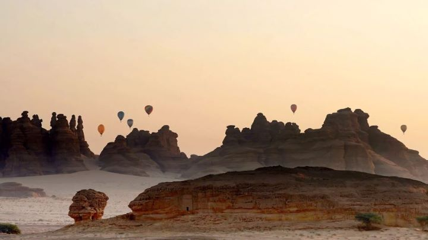
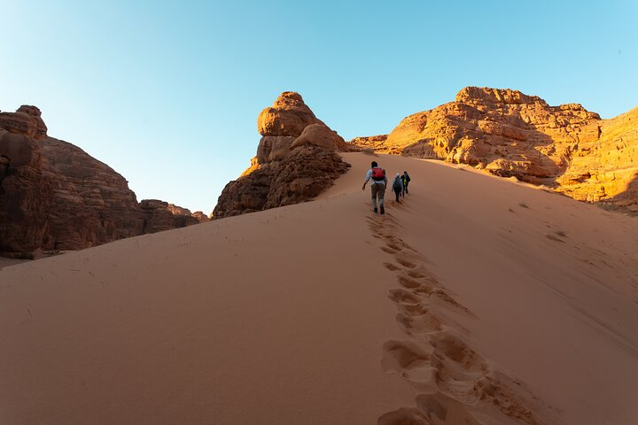
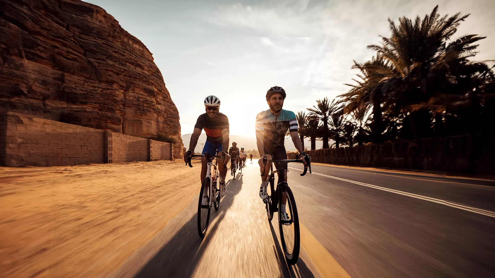
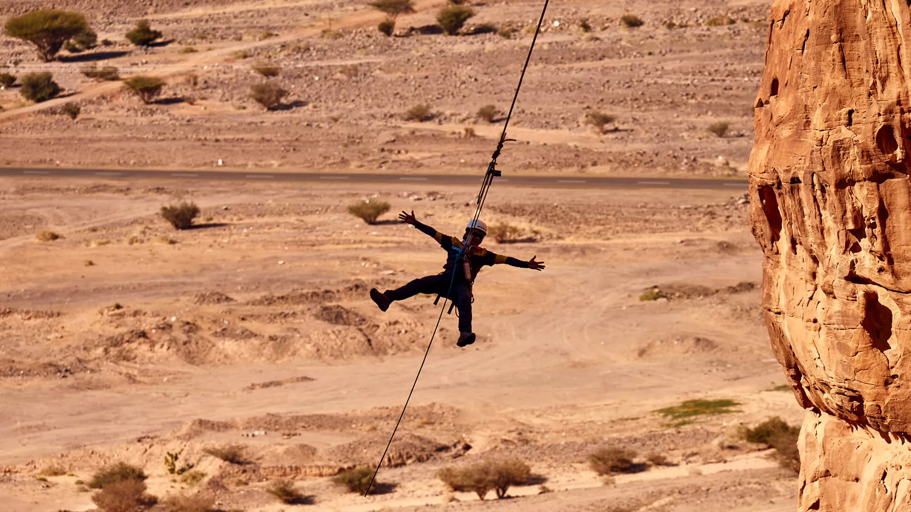

Experience the magic of AlUla from the skies with a hot air balloon ride. Float
gently above the enchanting landscapes at sunrise, shared or privately, and see the ancient city
from 1,200 meters up.

Hiking in AlUla offers a unique journey through ancient landscapes, revealing
majestic rock formations and hidden historical treasures. Trails cater to all levels, leading
adventurers through diverse ecosystems and offering breathtaking views, connecting them directly
with nature and centuries of history.

The AlUla Wheels Bike Hub offers an enriching cycling experience for enthusiasts of all levels
amidst the stunning landscapes of AlUla. From bike rentals to guided tours, it provides a unique way
to explore the natural and historical beauty of the region. Whether you're a seasoned cyclist or
just looking for a leisurely ride, the Wheels Bike Hub invites you to enjoy the breathtaking views
and discover AlUla's heritage sites on two wheels.

The Giant Swing in AlUla offers an exhilarating experience, where participants swing over 85 meters
above the ground into a 70-meter arc within a stunning canyon. This adventure, operated by The
Warrior Group, is a must-try for thrill-seekers visiting the area.